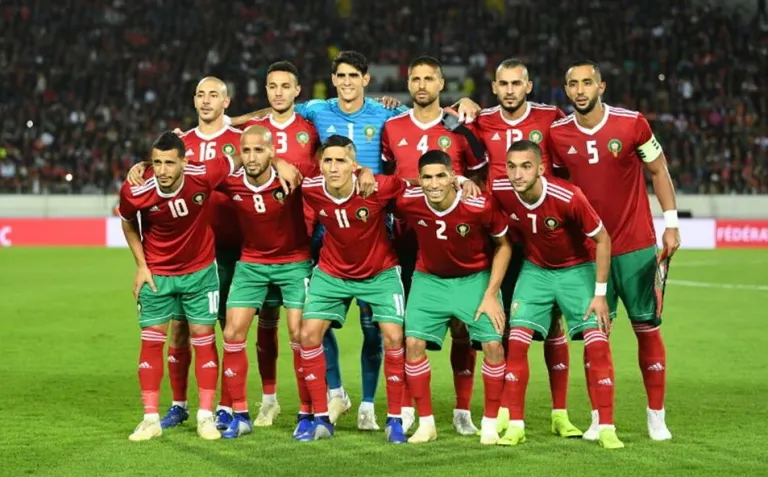

A seleção de Marrocos participou de sua quinta edição da Copa do Mundo de futebol em 2018. Marrocos também esteve presente nos mundiais de 1970, 1986, 1994 e 1998. A melhor campanha da seleção marroquina foi em 1986. Em 2022 Fará sua 6° participação que será no Qatar.
Não obteve títulos em Copa do Mundo.
| Data/Hora | Estádio | Adversário |
|---|---|---|
| 23 nov 2022 / 07h00 | Estádio Al Bayt | Croácia |
| 27 nov 2022 / 10h00 | Estádio Al Thumama | Bélgica |
| 1º dez 2022 / 12h00 | Estádio Ahmad bin Ali | Canadá |